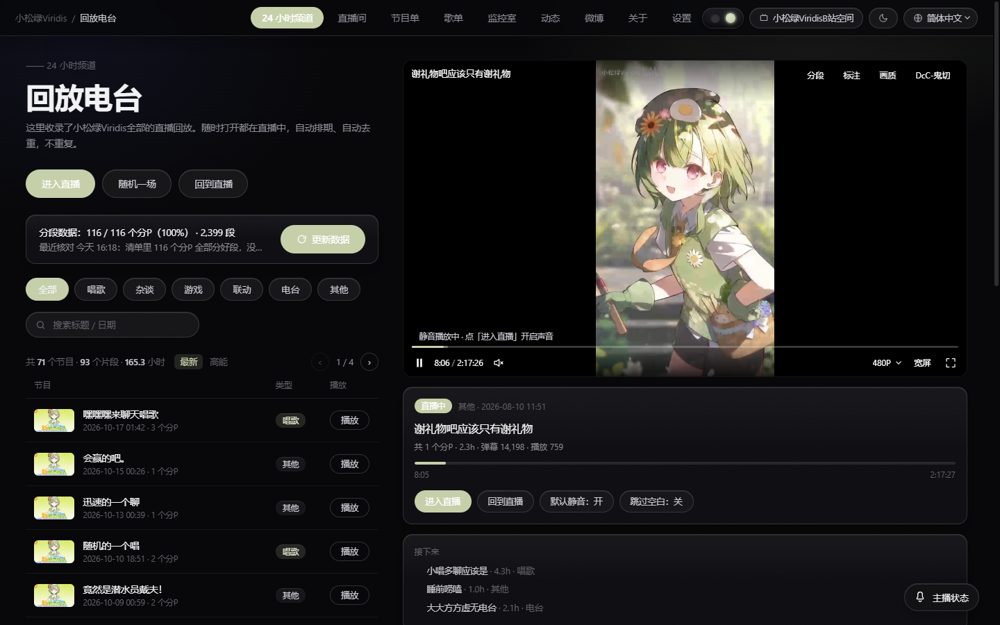
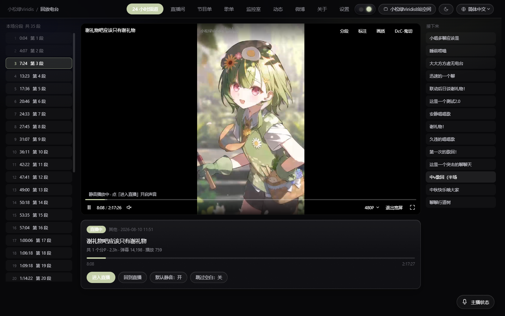
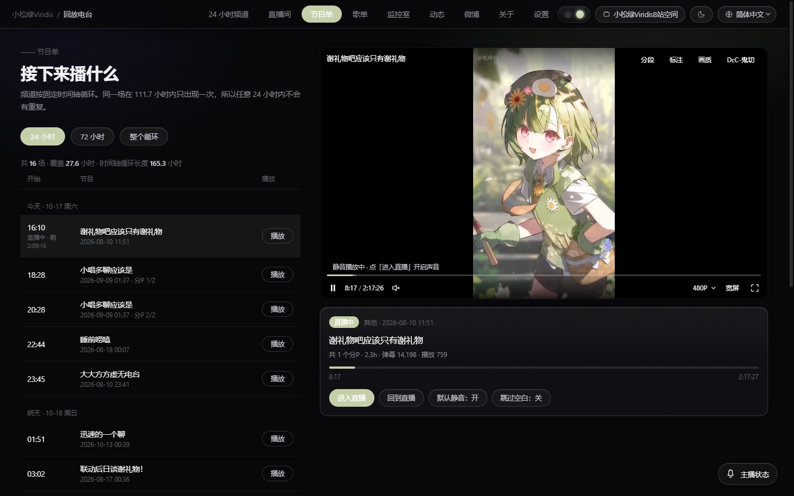
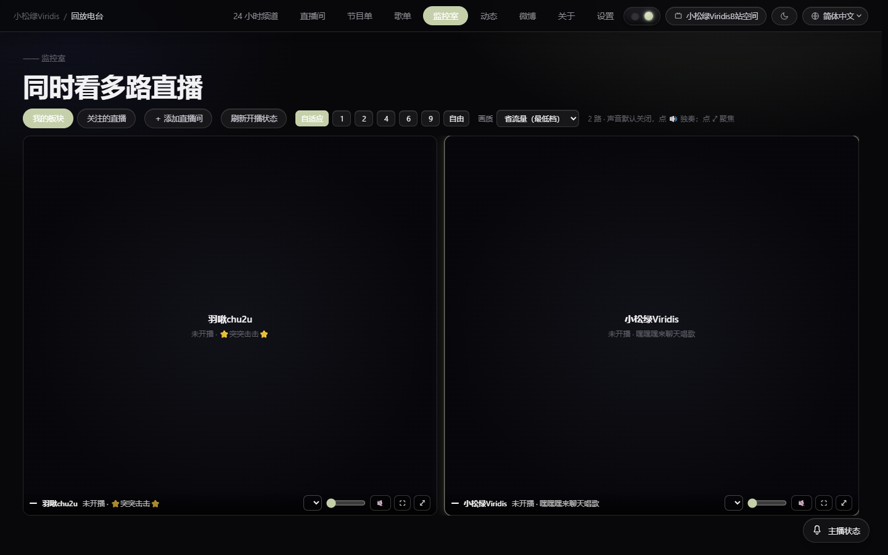

填一位主播的 B 站 UID，TA 的全部直播回放就排成一条 24 小时循环时间轴， 打开即对齐到「现在该播第几场」。原生窗口运行，不起浏览器、不弹地址栏、不用敲命令。

页面本身没改，改的是外面那层壳：从「跑个脚本再开浏览器」变成「双击一个程序」。
WebView2 内嵌，有任务栏图标，Alt+Tab 能切，不带地址栏和标签页。
运行时一起打包，机器上没配过开发环境也能直接跑。
启动前先探一个空闲端口再交给后端，不和你别的本地服务抢。
仍然读写 %LOCALAPPDATA%\ReplayRadio，官方版攒的配置直接生效。
不用在标签页之间来回跳，想看的都收在同一处，切一下就到。
全部回放按固定顺序排成循环时间轴，随时打开都在「直播中」，自动排期、自动去重。
主播开播直接进直播间，右侧实时弹幕，登录后可发弹幕互动，画质可切到 1080P。
24 小时 / 72 小时 / 整个循环三种时间表，任一场点一下就播，不用自己找位置。
粘一个 B 站链接导入整张歌单，按语言、风格、演唱者筛选，支持从头一路连播。
多路直播同屏，1~9 路 / 自适应 / 自由拖动随便切，每路独立音量与画质。
主播最新动态和微博聚在页面里，顺手还能接着看正在播的那一场。
本机运行时的实拍，未做视觉修饰。



没有安装向导，也不需要命令行。
把下载的压缩包解到任意文件夹。建议别放 C:\Program Files，那里写文件要管理员权限。
运行 ReplayRadio.exe，窗口直接出来。重复双击不会重复起服务。
首屏填一位主播的 B 站 UID（个人主页网址里那串数字），点「检测」确认后即可进入频道。
解压即用，已内置 FFmpeg，所以「自动分段 / 跳过空白」开箱可用。
%LOCALAPPDATA%\ReplayRadio先看 %LOCALAPPDATA%\ReplayRadio\launcher.log 和同目录的 log.txt。
最常见是端口被别的程序占了，或杀毒软件拦了本地监听。关掉占用端口的程序后重试即可，
外壳会自动换一个空闲端口。
未登录时 B 站接口只下发较低清晰度。在页面里点播放器右上角「登录」扫码， 之后就能取到更高画质；能不能拿到 1080P 还取决于账号本身。
不建议。程序要把网页文件和数据写到用户目录，装在受保护路径容易触发权限问题。 WebView2 的缓存也已显式指到用户目录，但解压到普通文件夹最省事。
不会。主播列表、分段结果、歌单全部只写本机 %LOCALAPPDATA%\ReplayRadio；
B 站登录凭据只存在本机 sessdata.txt，仅用于向 B 站官方接口取流，不发给任何第三方。
这是社区外壳，不是官方发行版。业务代码来自
DcC176/replay-radio（MIT），
本仓库只替换最外层容器，并把原项目代码作为 app/ 原样快照保留，便于跟随上游升级。
不需要，发行包里已经带了。自己从源码构建时，把 ffmpeg.exe 放进
vendor/ 或设好 FFMPEG 环境变量即可，不提供则跳过该功能，其余正常。